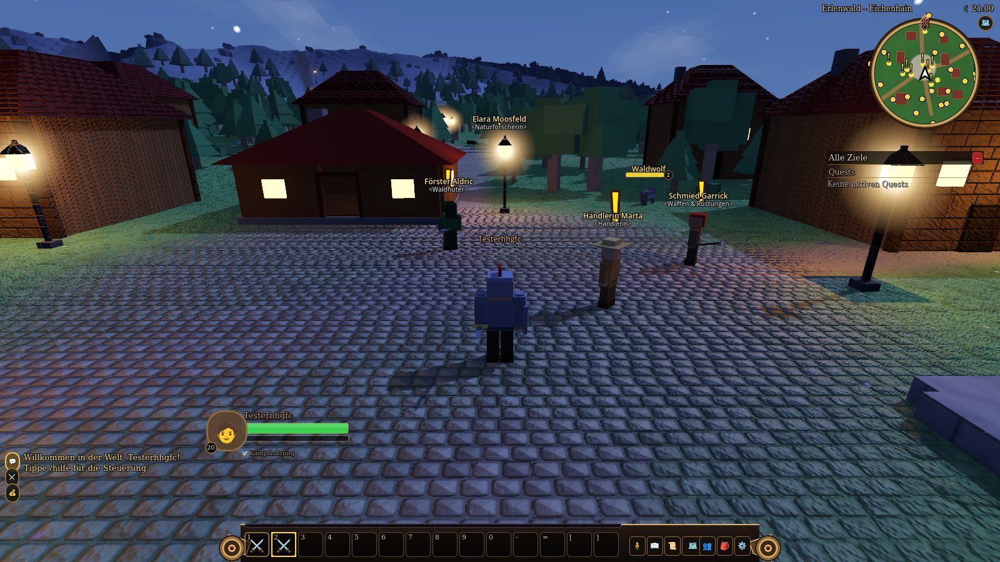
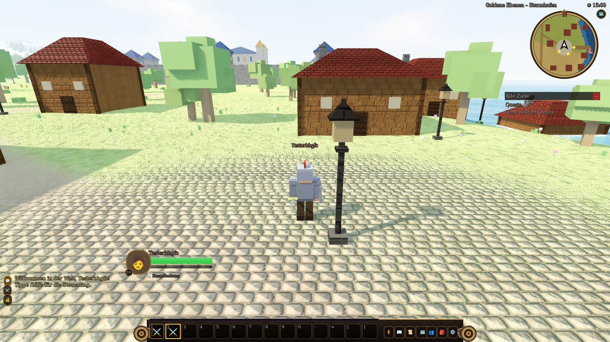
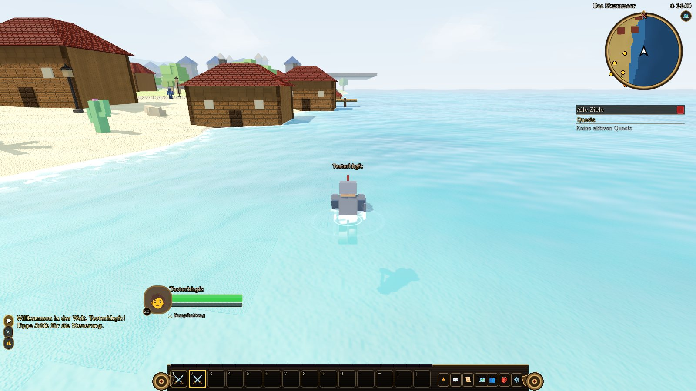
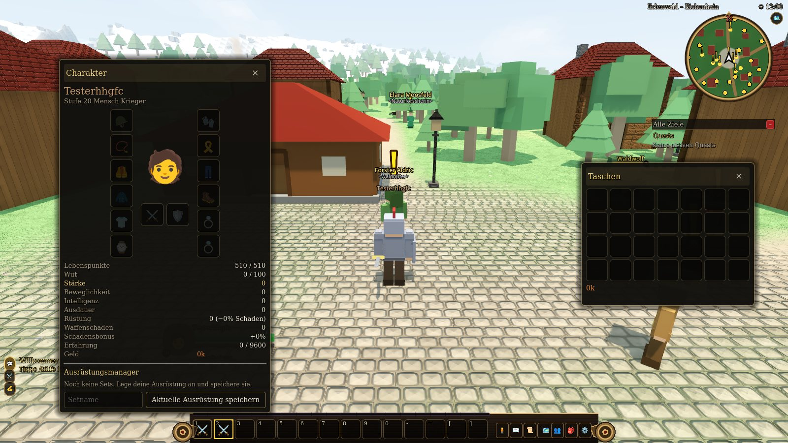
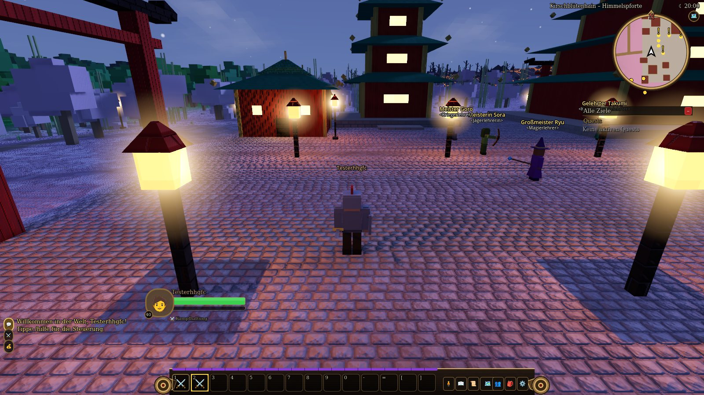

Nativer Client
Die Desktop-Version für Windows und Linux, gebaut mit Godot 4. Mehr Grafik, mehr Einstellungen, flüssigere Steuerung, derselbe Server.
Was der native Client mehr kann
Licht und Schatten
Sonne und Mond werfen Echtzeitschatten. Laternen und Häuser leuchten bei Nacht und werfen ihre eigenen Schatten.
Realistisches Wasser
Wellen, Himmelsspiegelung, Tiefenfärbung und Schaum an der Küste. Schwimmer ziehen Wellenringe.
Detailreicher Boden
Gras mit Halmen und Blumen, gewellter Sand, Kopfsteinpflaster, Felsschichten und glitzernder Schnee.
Gebäude-Shader
Mauerwerk, Holzbohlen, Putz und Dachschindeln mit feinem Relief, auf dem das Licht spielt.
Viele Einstellungen
Grafik-Voreinstellungen von Niedrig bis Ultra, SSAO, Bloom, Nebel, FSR, V-Sync und vieles mehr. Tasten frei belegbar.
Gamepad
Linker Stick laufen, rechter Stick Kamera, Tasten für Fertigkeiten und Interaktion.
Launcher mit Auto-Update
Findet neue Versionen selbst, lädt nur geänderte Dateien und repariert beschädigte Installationen. Der Changelog aller Versionen steht im Launcher.
Musik und Klang
Orchestrale Musik je Landschaft, Tageszeit und Kampf, dazu Effekte. Lautstärken getrennt einstellbar.
Download
Windows
Der Installer lädt Launcher und Spiel (ca. 24 MB, danach holt der Launcher das Spiel). Installation ohne Administratorrechte, Startmenü und Desktop-Verknüpfung.
Installer herunterladenErlenwaldOnline-Setup.exe Komplettpaket (offline)ErlenwaldOnline-Setup-Full.exeLinux
Archiv entpacken und ./install.sh ausführen. Das legt einen Menüeintrag und den Befehl erlenwald an. Der Launcher lädt das Spiel beim ersten Start.
Web-Client
Ohne Installation im Browser, auch auf Tablet und Smartphone mit Touch-Steuerung. Der Web-Client wird vom Server ausgeliefert.
So spielst du im BrowserWindows, Linux, macOS, MobilAktuelle Version · Der Launcher aktualisiert das Spiel danach selbst und lädt nur geänderte Dateien. Die Programme sind nicht signiert: Windows SmartScreen zeigt beim ersten Start „Weitere Informationen → Trotzdem ausführen“.
Installation
Windows
ErlenwaldOnline-Setup.exeherunterladen und starten.- Falls SmartScreen warnt: Weitere Informationen → Trotzdem ausführen.
- Den Launcher über Startmenü oder Desktop starten. Er lädt das Spiel beim ersten Mal.
Linux
tar xzf ErlenwaldOnline-linux.tar.gz
./install.sh
erlenwaldSystemvoraussetzungen
| System | Windows 10/11 oder Linux (x86-64) |
| Grafik | Grafikkarte mit Vulkan oder Direct3D 12, ältere Karten laufen im OpenGL-Modus |
| Speicher | Ca. 4 GB RAM, rund 300 MB Festplatte mit Musik |
| Netzwerk | Verbindung zu einem Erlenwald-Server (Adresse im Anmeldebildschirm) |
| Steuerung | Tastatur und Maus, Gamepad optional |
Beim Start kannst du die Serveradresse eintragen. Standard ist localhost:8080, passend zu einem lokal gestarteten Server.
Screenshots
Aufnahmen aus dem nativen Client. Klicke ein Bild an, um es groß zu sehen.





